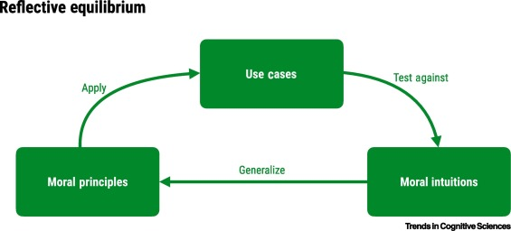
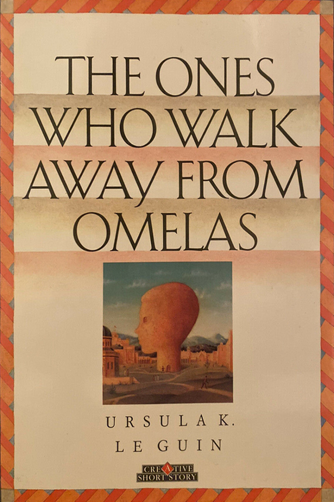
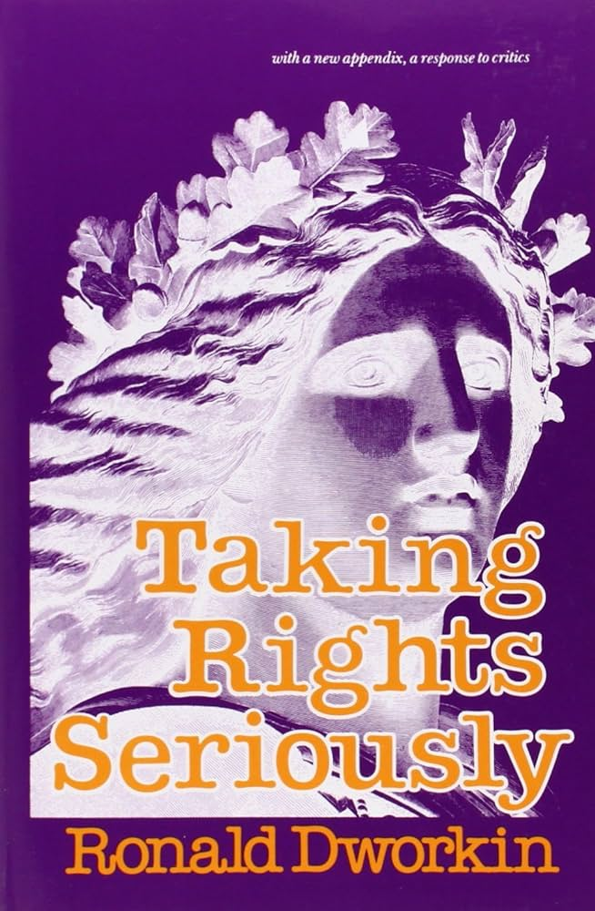
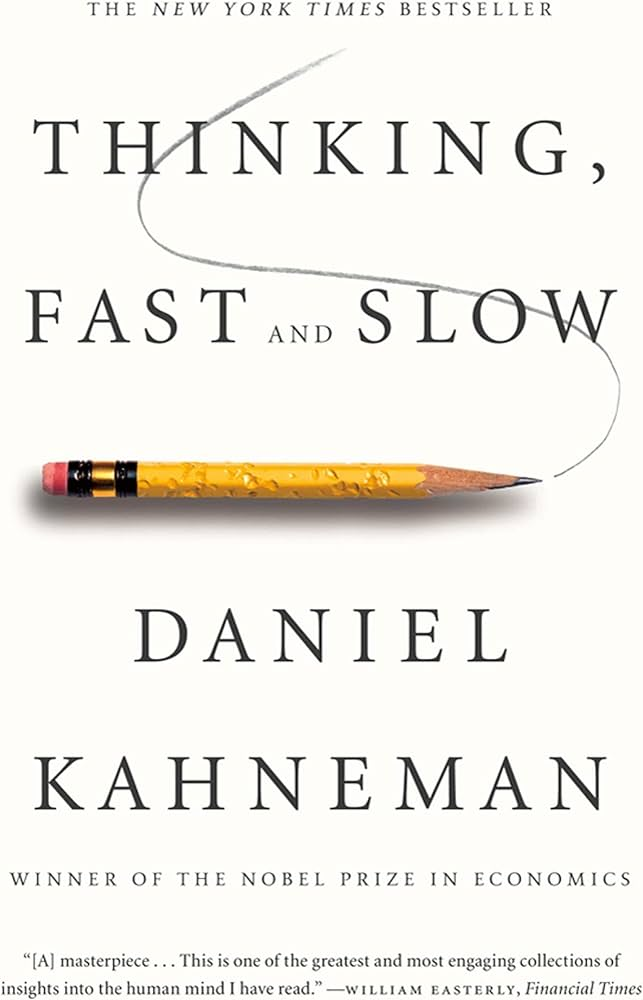
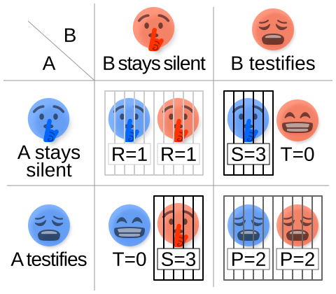

Week 3: Ethical Frameworks
DSAN 5450: Data Ethics and Policy
Spring 2024, Georgetown University
Ethical Frameworks
- Consequentialism
- Deontology
- Virtue Ethics
Reflective Equilibrium
- Most criticisms of any framework boil down to, “great in theory, but doesn’t work in practice”
- The way to take this seriously: reflective equilibrium
- Introduced by Rawls (1951), but popularized by Rawls (1971)

Rawls vs. Everyone Else
- Q: What book had the greatest impact on modern (Anglophone) philosophy?
- One approach: citations in a widely-used encyclopedia of philosophy1… The results:
| Book | Book | ||
|---|---|---|---|
| 1 | Rawls 1972, A Theory of Justice (115) | 6 | Parfit 1984, Reasons and Persons (62) |
| 2 | Kripke 1980, Naming and Necessity (88) | 7 | Scanlon 1998, What We Owe to Each Other (56) |
| 3 | Lewis 1986, On the Plurality of Worlds (63) | 8 | Wittgenstein 1953, Philosophical Investigations (55) |
| 3 | Nozick 1974, Anarchy, State and Utopia (63) | 9 | Chalmers 1996, The Conscious Mind (53) |
| 3 | Quine 1960, Word and Object (63) | 10 | Rawls 1993, Political Liberalism (48) |
Descriptive vs. Normative Meaning
Easy Mode: Descriptive Judgements
How did you acquire the concept “red”?
- People pointed to stuff with certain properties and said “red” (or “rojo” or “红”), as part of constructing an intersubjective communication system
- These descriptive concepts exist essentially for coordination, like driving on the left vs. right side of the road!
- Nothing very profound or difficult seems to come from the commitments implied by this descriptive coordination: “for ease of communication, I’ll vibrate my vocal chords like this (or write these symbols) to indicate \(x\), and I’ll vibrate them like this (or write these other symbols) to indicate \(y\)”
- Our linguistic choices, when it comes to description, are arbitrary: Our mouths can make these sounds, and each language is a mapping: [combinations of sounds] \(\leftrightarrow\) [things]
What Makes Ethical Judgements “More Difficult”?
How did you acquire the concept “good”?
- People pointed to actions/decisions with certain properties and said “good” (and pointed at others and said “bad”), as part of instilling values in you
- “Grass is green” just links two descriptive referents together, while “Honesty is good” takes the descriptive concept “honesty” and links it with the normative concept “good”
- In doing this, parents/teachers/friends are doing way more than just linking sounds and things in the world: they are also prescribing rules of moral conduct!
- These normative concepts go beyond communication: the course of your life, the way the future unfolds, is different if you act on one set of norms vs. another
- Ethics therefore centrally involves non-arbitrarily-chosen commitments!
- tl;dr: languages are arbitrary conventions for communication, while ethical systems use this language to non-arbitrarily mark out things that are good/bad:
- Life would not be very different if we “shuffled” words (we’d just vibrate our vocal chords differently), but would be very different if we “shuffled” good/bad labeling
Historical Example: Capitalism and the “Protestant Ethic”
- Big changes in history are associated with changes in this good/bad labeling!
- Max Weber (second most-cited sociologist of all time): Protestantism gave rise to the capitalist system by relabeling what things are good vs. bad (Weber 1904):
Jesus said to his disciples, “Truly, I say to you, only with difficulty will a rich person enter the kingdom of heaven. Again I tell you, it is easier for a camel to go through the eye of a needle than for a rich person to enter the kingdom of God.” (Matthew 19:23-24)
Oh, were we loving God worthily, we should have no love at all for money! (St. Augustine 1874, pg. 28)
The earliest capitalists lacked legitimacy in the moral climate in which they found themselves. One of the means they found [to legitimize their behavior] was to appropriate the evaluative vocabulary of Protestantism. (Skinner 2012, pg. 157)
Contemporary Example: Palestine
- Very few of the relevant empirical facts are in dispute, since opening of crucial archives to three so-called “New Historians” in the 1980s. So why do people still argue?
- Ilan Pappe, one of these historians, concluded from this material that:
- The Israeli state was built upon a massive ethnic cleansing, and
- Is not morally justifiable (Pappe 2006)
The immunity Israel has received over the last fifty years encourages others, regimes and oppositions alike, to believe that human and civil rights are irrelevant in the Middle East. The dismantling of the mega-prison in Palestine will send a different, and more hopeful, message.
- Benny Morris, another of these historians, concluded that:
- The Israeli state was built upon a massive ethnic cleansing, and
- Is morally justifiable (Morris 1987)
A Jewish state would not have come into being without the uprooting of 700,000 Palestinians. Therefore it was necessary to uproot them. There was no choice but to expel that population. It was necessary to cleanse the hinterland and cleanse the border areas and cleanse the main roads.
Ethical Frameworks
(From W01) Promise-Keeping
- Scenario: You just baked a pie, and you promised your friend you’d give them the pie. You’re walking over to the friend’s house to give them the pie.
- Suddenly, you turn the corner to encounter a hostage situation: the hostage-taker is going to kill their hostage unless someone gives them a pie in the next 30 seconds
- Do you give the hostage-taker the pie?
- To be ethical is to weigh consequences of your actions
- The positive consequences of giving the pie to the hostage-taker (saving a life) outweigh the negative consequences (breaking your promise to your friend)
- (Ex: Utilitarianism, associated with British philosopher Jeremy Bentham)
- To be ethical is to live by rules which you would want everyone to follow.
- As a rule (a “categorical imperative”), you must not break promises. (Breaking this rule \(\implies\) others can also “pick and choose” when to honor promises to you)
- (Ex: Kantian Ethics, associated with German philosopher Immanuel Kant)
Counterargument to Consequentialism
Millions are kept permanently happy, on the one simple condition that a certain lost soul on the far-off edge of things should lead a life of lonely torture (James 1891)
- Modern example: people “out there” suffer so we can have iPhones, etc.

One Solution: Individual Rights
- Rights are vetoes which individuals can use to cancel out collective/institutional decisions which affect them
- Key example for us: right to privacy

Counterargument to Deontology
- Deontological rule: “Don’t lie”
- Real-world case: Nazis come to your house, ask you if you’re harboring any Jews
A Synthesis: Two-Level Utilitarianism
- It would be exhausting to compute Nash equilibrium strategies for every interaction
- Instead, we can develop heuristics that work for most cases, then reevaluate and update when we encounter tough cases
- (Brings us back to reflective equilibrium!)

Enter Game Theory
- A tool for analyzing how individual choices + choices of others \(\rightarrow\) outcomes!
- Example: You (\(A\)) and a friend (\(B\)) committed a robbery, and you’re brought into the police station for questioning.
- You’re placed in separate rooms, and each of you is offered a plea deal: if you testify while your partner stays silent, you go free and they go to jail for 3 years.
- Otherwise, if you both stay silent, they have very little evidence and can only jail you for 1 year
- However, there’s a catch: if you both confess, you both get two years in jail, since they now have maximal evidence

Individual Decision-Making
- Let’s think through \(A\)’s best responses to the possible choices \(B\) could make:
- If \(B\) stays silent, what is \(A\)’s best option?
- Staying silent results in 1 year of jail
- Testifying results in 0 years of jail
- So it is better to testify
- If \(B\) testifies, what is \(A\)’s best option?
- Staying silent results in 3 years of jail
- Testifying results in 2 years of jail
- So it is better to testify
- The result: regardless of what \(B\) does, \(A\) is better off testifying!
How Do We Fix This? Conventions!
- We encounter this type of problem every day if we drive! You (\(A\)) and another driver (\(B\)) arrive at an intersection:
- If we both stop, we’re mostly bored (\(u_A = -1\))
- If we stop and the other person drives, we’re mad that they got to go and we didn’t (\(u_A = -3\))
- If we both drive, we crash (\(u_A = -5\))
| \(B\) | |||
| Stop | Drive | ||
| \(A\) | Stop | \(-1,-1\) | \(-3,\phantom{-}0\) |
| Drive | \(\phantom{-}0, -3\) | \(-5,-5\) | |
Without A Convention
- We’re “frozen”: this game has no unique Nash equilibrium, so we cannot say (on the basis of individual rationality) what will happen!
- Without a convention: power takes over. “War of all against all”, only the strong survive, etc.
- If my power is \(p\) and the other player’s power is \(q\), we can model \(\Pr((Drive, Stop)) = \frac{p}{p+q}\), \(\Pr((Stop, Drive)) = \frac{q}{p+q}\)
- \(\mathbb{E}[u_A] = p(0) + q(-3) = -3\frac{q}{p+q}\)
- \(\mathbb{E}[u_B] = q(0) + p(-3) = -3\frac{p}{p+q}\)
| \(B\) | |||
| Stop | Drive | ||
| \(A\) | Stop | \({\color{orange}\cancel{\color{black}-1}},{\color{lightblue}\cancel{\color{black}-1}}\) | \(\boxed{-3},\boxed{0}\) |
| Drive | \(\boxed{0}, \boxed{-3}\) | \({\color{orange}\cancel{\color{black}-5}},{\color{lightblue}\cancel{\color{black}-5}}\) | |
The Convention of Traffic Lights
- If we don’t want a world where happiness \(\propto\) power, we can introduce traffic lights:
- Now \(\Pr((Drive, Stop)) = 0.5\), \(\Pr((Stop, Drive)) = 0.5\)
- \(\mathbb{E}[u_A] = (0.5)(0) + (0.5)(-3) = -1.5\)
- \(\mathbb{E}[u_B] = (0.5)(-3) + (0.5)(0) = -1.5\)
| \(B\) | |||
| Stop | Drive | ||
| \(A\) | Stop | \({\color{orange}\cancel{\color{black}-1}},{\color{lightblue}\cancel{\color{black}-1}}\) | \(\boxed{-3},\boxed{0}\) |
| Drive | \(\boxed{0}, \boxed{-3}\) | \({\color{orange}\cancel{\color{black}-5}},{\color{lightblue}\cancel{\color{black}-5}}\) | |
- Empirical (anthropological) findings across literally thousands of different cultures throughout the world: people are willing to give up rewards to ensure fairness (see, e.g., Henrich et al. (2001))
So How Should We Make/Choose Conventions?
Rawls’ Veil of Ignorance
- Probably the most important tool for policy whitepapers!
- “Justice as fairness” (next week: fairness in AI 😜)
- We don’t know whether we’ll be \(A\) or \(B\) in the intersection game, so we’d choose the traffic light!
- More profoundly: We don’t know what race, gender, class, ethnicity, sexuality, disability status we’ll have; We don’t know whether we’ll be Israeli or Palestinian; we don’t know whether we’ll own means of production or own only our labor power (and thus have to sell it on a market to survive)… 🤔
References
Footnotes
Keep in mind, however, the dangers of reification we talked about last week!↩︎